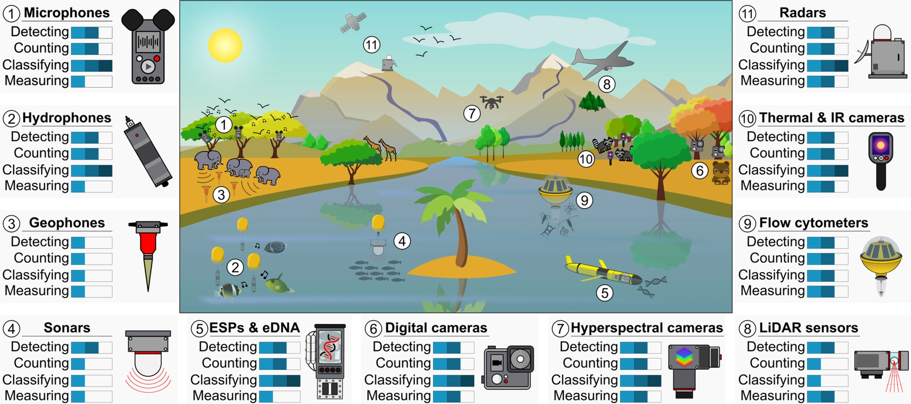
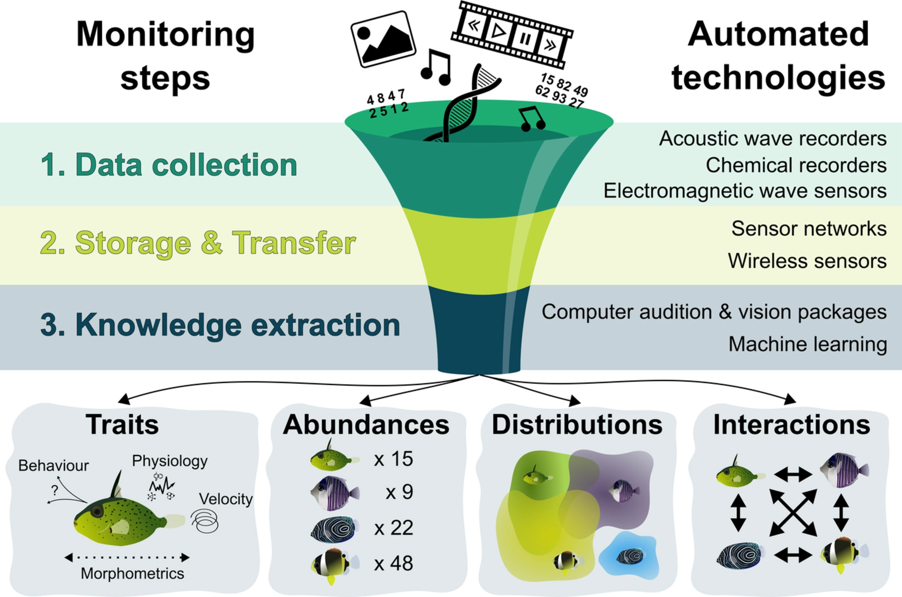
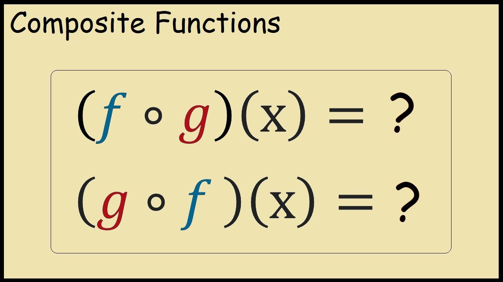
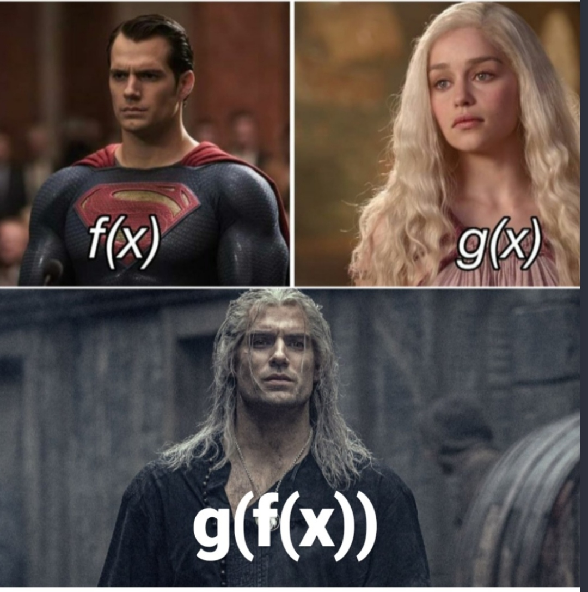

Manipulação de dados em R (tidyverse)
NT265/NE441 - Análise de dados e apresentação de gráficos usando a linguagem R
5 de novembro de 2025
tidyverse

Artwork by @allison_horst
Conteúdo
- Contextualização
- tidyverse
- readr, readxl e writexl
- tibble
- magrittr (pipe - %>%)
- tidyr
- dplyr
- stringr
- forcats
- lubridate
- purrr
Ciência de dados ambiental (Environmental Data Science)
Ecoinformatics
Ciência de dados para ecólogos
(Data Science for Ecologists)
Environmental Data Science

Legal, mas ainda está distante…
Legal, mas ainda está distante… Nem tanto…
Big Data em Ecologia
Big Data em Ecologia
Mudança de paradigma
Big Data em Ecologia
Quantidade de dados

Data papers
iEcology
Monitoramento automatizado

Monitoramento automatizado
 
Machine Learning em Ecologia
Machine Learning em Ecologia
Machine Learning em Ecologia
Machine Learning em Ecologia
Deep Learning em Ecologia
Amostragem de insetos e fragmentação em Balbinas (AM)
Repositório do GitHub
https://github.com/mauriciovancine/workshop-r-data-manipulation
Script
Abram o script
script_r.R
tidyverse
Descrição
O
tidyverseé um conjunto de pacotes designados para Data ScienceTodos os pacotes compartilham uma filosofia de design, gramática e estruturas de dados
É um “dialeto novo” para a linguagem R
tidy: organizado, arrumado, ordenado
verse: universo
Fluxo de trabalho

Pacotes

Artigos
- Wickham, Hadley. “Tidy data.” Journal of Statistical Software 59.10 (2014): 1-23.
- Wickham, Hadley, et al. “Welcome to the Tidyverse.” Journal of Open Source Software 4.43 (2019): 1686.
Livro

Livro
Tradução para o português
R para Ciência de Dados (2ª edição)
Site

tidyverse
Para utilizar os pacotes é preciso instalar e carregar o pacote tidyverse
── Attaching core tidyverse packages ──────────────────────── tidyverse 2.0.0 ──
✔ dplyr 1.1.4 ✔ readr 2.1.5
✔ forcats 1.0.1 ✔ stringr 1.5.2
✔ ggplot2 4.0.0 ✔ tibble 3.3.0
✔ lubridate 1.9.4 ✔ tidyr 1.3.1
✔ purrr 1.1.0
── Conflicts ────────────────────────────────────────── tidyverse_conflicts() ──
✖ dplyr::filter() masks stats::filter()
✖ dplyr::lag() masks stats::lag()
ℹ Use the conflicted package (<http://conflicted.r-lib.org/>) to force all conflicts to become errorsPacotes do tidyverse
Listar os pacotes
[1] "broom" "conflicted" "cli" "dbplyr"
[5] "dplyr" "dtplyr" "forcats" "ggplot2"
[9] "googledrive" "googlesheets4" "haven" "hms"
[13] "httr" "jsonlite" "lubridate" "magrittr"
[17] "modelr" "pillar" "purrr" "ragg"
[21] "readr" "readxl" "reprex" "rlang"
[25] "rstudioapi" "rvest" "stringr" "tibble"
[29] "tidyr" "xml2" "tidyverse" Sintaxe
Todas as funções dos pacotes tidyverse usam fonte minúscula e _ para separar os nomes internos das funções (snake_case)
read_csv()
read_xlsx()
as_tibble()
left_join()
group_by()
Sintaxe
Geralmente indica-se de quais pacotes as funções são utilizadas (pacote::função) para evitar erros com outros pacotes
readr::read_csv()
readxl::read_xlsx()
tibble::as_tibble()
dplyr::left_join()
dplyr::group_by()

Descrição
Carrega e salva grandes arquivos de forma rápida
As funções fornecem medidores de progresso (big data)
Classificam o modo (tipo dos dados) de cada coluna
A classe do objeto atribuído é
tibbleFunções:
read_csv(): lê arquivos Comma-separated valuesread_csv2(): lê arquivos Comma-separated values (separado por ;)read_tsv(): lê arquivos Tab-separated valuesread_delim(): lê arquivos delim-separated valueswrite_csv(): escreve arquivos Comma-separated valueswrite_csv2(): escreve arquivos Comma-separated values (separado por ;)write_delim(): escreve arquivos delim-separated values
Diretório
Caminho no computador para importar e exportar dados
Definir diretório
Conferir diretório
Vamos trabalhar com dados reais?
Importar dados
ATLANTIC AMPHIBIANS: a dataset of amphibian communities from the Atlantic Forests of South America

Importar dados
Formato .csv
# A tibble: 1,163 × 25
id reference_number species_number record sampled_habitat active_methods
<chr> <dbl> <dbl> <chr> <chr> <chr>
1 amp1001 1001 19 ab fo,ll as
2 amp1002 1002 16 co fo,la,ll as
3 amp1003 1002 14 co fo,la,ll as
4 amp1004 1002 13 co fo,la,ll as
5 amp1005 1003 30 co fo,ll,br as
6 amp1006 1004 42 co tp,pp,la,ll,is <NA>
7 amp1007 1005 23 co sp as
8 amp1008 1005 19 co sp,la,sw as,sb,tr
9 amp1009 1005 13 ab fo <NA>
10 amp1010 1006 1 ab fo <NA>
# ℹ 1,153 more rows
# ℹ 19 more variables: passive_methods <chr>, complementary_methods <chr>,
# period <chr>, month_start <dbl>, year_start <dbl>, month_finish <dbl>,
# year_finish <dbl>, effort_months <dbl>, country <chr>, state <chr>,
# state_abbreviation <chr>, municipality <chr>, site <chr>, latitude <dbl>,
# longitude <dbl>, coordinate_precision <chr>, altitude <dbl>,
# temperature <dbl>, precipitation <dbl>Importar dados
Formato .txt
# A tibble: 1,163 × 25
id reference_number species_number record sampled_habitat active_methods
<chr> <dbl> <dbl> <chr> <chr> <chr>
1 amp1001 1001 19 ab fo,ll as
2 amp1002 1002 16 co fo,la,ll as
3 amp1003 1002 14 co fo,la,ll as
4 amp1004 1002 13 co fo,la,ll as
5 amp1005 1003 30 co fo,ll,br as
6 amp1006 1004 42 co tp,pp,la,ll,is <NA>
7 amp1007 1005 23 co sp as
8 amp1008 1005 19 co sp,la,sw as,sb,tr
9 amp1009 1005 13 ab fo <NA>
10 amp1010 1006 1 ab fo <NA>
# ℹ 1,153 more rows
# ℹ 19 more variables: passive_methods <chr>, complementary_methods <chr>,
# period <chr>, month_start <dbl>, year_start <dbl>, month_finish <dbl>,
# year_finish <dbl>, effort_months <dbl>, country <chr>, state <chr>,
# state_abbreviation <chr>, municipality <chr>, site <chr>, latitude <dbl>,
# longitude <dbl>, coordinate_precision <chr>, altitude <dbl>,
# temperature <dbl>, precipitation <dbl>
Descrição
Pacotes para importar e exportar planilhas no formato Excel®
Carrega e salva grandes arquivos de forma rápida
As funções fornecem medidores de progresso (big data)
Classificam o modo (tipo dos dados) de cada coluna
A classe do objeto atribuído é
tibbleFunções:
read_excel(): lê arquivos de planilhas Excel®read_xls(): lê arquivos de planilhas Excel® (antes de 2010)write_xlsx(): escreve arquivos de planilhas Excel®
Importar dados
Formato .xlsx
# A tibble: 1,163 × 25
id reference_number species_number record sampled_habitat active_methods
<chr> <dbl> <dbl> <chr> <chr> <chr>
1 amp1001 1001 19 ab fo,ll as
2 amp1002 1002 16 co fo,la,ll as
3 amp1003 1002 14 co fo,la,ll as
4 amp1004 1002 13 co fo,la,ll as
5 amp1005 1003 30 co fo,ll,br as
6 amp1006 1004 42 co tp,pp,la,ll,is NA
7 amp1007 1005 23 co sp as
8 amp1008 1005 19 co sp,la,sw as,sb,tr
9 amp1009 1005 13 ab fo NA
10 amp1010 1006 1 ab fo NA
# ℹ 1,153 more rows
# ℹ 19 more variables: passive_methods <chr>, complementary_methods <chr>,
# period <chr>, month_start <chr>, year_start <chr>, month_finish <chr>,
# year_finish <chr>, effort_months <chr>, country <chr>, state <chr>,
# state_abbreviation <chr>, municipality <chr>, site <chr>, latitude <dbl>,
# longitude <dbl>, coordinate_precision <chr>, altitude <dbl>,
# temperature <chr>, precipitation <chr>Exportar dados
Diversos formatos

Descrição
Dados importados de planilhas eletrônicas são data frames (quadro de dados)
tibble(classetbl_df) é um tipo especial de data frameClasse adequada para o funcionamento das das funções do
tidyverse
Espiando os dados
Descrição dos dados: linhas (Rows) e colunas (Columns)
Descrição das colunas: numbers(int, dbl), character(chr), logical(lgl) ou factor(fctr)
Rows: 1,163
Columns: 25
$ id <chr> "amp1001", "amp1002", "amp1003", "amp1004", "amp…
$ reference_number <dbl> 1001, 1002, 1002, 1002, 1003, 1004, 1005, 1005, …
$ species_number <dbl> 19, 16, 14, 13, 30, 42, 23, 19, 13, 1, 1, 2, 4, …
$ record <chr> "ab", "co", "co", "co", "co", "co", "co", "co", …
$ sampled_habitat <chr> "fo,ll", "fo,la,ll", "fo,la,ll", "fo,la,ll", "fo…
$ active_methods <chr> "as", "as", "as", "as", "as", "NA", "as", "as,sb…
$ passive_methods <chr> "pt", "pt", "pt", "pt", "NA", "NA", "NA", "NA", …
$ complementary_methods <chr> "NA", "NA", "NA", "NA", "NA", "NA", "NA", "NA", …
$ period <chr> "mo,da,tw,ni", "mo,da,tw,ni", "mo,da,tw,ni", "mo…
$ month_start <chr> "9", "12", "12", "12", "7", "NA", "4", "4", "4",…
$ year_start <chr> "2000", "2007", "2007", "2007", "1988", "NA", "2…
$ month_finish <chr> "1", "5", "5", "5", "8", "NA", "4", "4", "4", "7…
$ year_finish <chr> "2002", "2009", "2009", "2009", "2001", "NA", "2…
$ effort_months <chr> "16", "17", "17", "17", "157", "NA", "24", "24",…
$ country <chr> "Brazil", "Brazil", "Brazil", "Brazil", "Brazil"…
$ state <chr> "Piauí", "Ceará", "Ceará", "Ceará", "Ceará", "Ce…
$ state_abbreviation <chr> "BR-PI", "BR-CE", "BR-CE", "BR-CE", "BR-CE", "BR…
$ municipality <chr> "Canto do Buriti", "São Gonçalo do Amarante", "S…
$ site <chr> "Parque Nacional Serra das Confusões", "Dunas", …
$ latitude <dbl> -8.680000, -3.545527, -3.574194, -3.515250, -4.2…
$ longitude <dbl> -43.42194, -38.85783, -38.88869, -38.91880, -38.…
$ coordinate_precision <chr> "gm", "dd", "dd", "dd", "gm", "NA", "gms", "gms"…
$ altitude <dbl> 543, 15, 29, 25, 750, 745, 863, 878, 826, 93, 35…
$ temperature <chr> "24.98", "26.53", "26.45", "26.55", "21.35", "20…
$ precipitation <chr> "853", "1318", "1248", "1376", "1689", "1249", "…
René Magritte (1898-1967)
Artista surrealista belga
“Ceci n’est pas une pipe”
Isso não é um cachimbo
Descrição
Pipe pode ser traduzido como “cano” ou “tubo”
Permite o “encadeamento” de várias funções sem armazenar resultados intermediários
Captura o resultado de uma função e torna a entrada da próxima função
Os códigos se tornam mais simples, pois permite a leitura sequencial do mesmo
Operador pipe:
%>%Atalho:
crtl + shift + M
Se preparem para uma revisão de funções compostas
Função composta
Função composta no R


pipe
Sem pipe
Com pipe

pipe
Sem pipe
Com pipe
Exercício
Reescreva cada uma das operações utilizando pipes %>%
log10(cumsum(1:100))
sum(sqrt(abs(rnorm(100))))
sum(log(sample(1:10, 10000, rep = TRUE)))
05:00
Exercício
Solução
Exercício
Solução
Exercício
Solução
Para apresentar os próximos pacotes, vamos usar dados de pinguins!

palmerpenguins
Dados de medidas de pinguins chamados
palmerpenguinsDados coletados e disponibilizados pela Dra. Kristen Gorman e pela Palmer Station, Antarctica LTER, membro da Long Term Ecological Research Network
Dois conjuntos de dados:
penguins_raw(dados brutos)penguins(versão simplificada)

palmerpenguins

palmerpenguins

Descrição
Funções para tornar um conjunto de dados tidy (organizados), facilitando a manipulação, modelagem e visualização
Um conjunto de dados é condiderando tidy quando:
- Cada variável está em uma coluna
- Cada observação está em uma linha
- Cada valor está em uma célula
Funções

Artwork by @allison_horst
unite
Une dados de múltiplas colunas em apenas uma coluna
# A tibble: 6 × 3
Region Island region_island
<chr> <chr> <chr>
1 Anvers Torgersen Anvers, Torgersen
2 Anvers Torgersen Anvers, Torgersen
3 Anvers Torgersen Anvers, Torgersen
4 Anvers Torgersen Anvers, Torgersen
5 Anvers Torgersen Anvers, Torgersen
6 Anvers Torgersen Anvers, Torgersenseparate
Separa caracteres de uma coluna em múltiplas colunas
# A tibble: 6 × 3
Stage stage egg_stage
<chr> <chr> <chr>
1 Adult, 1 Egg Stage Adult 1 Egg Stage
2 Adult, 1 Egg Stage Adult 1 Egg Stage
3 Adult, 1 Egg Stage Adult 1 Egg Stage
4 Adult, 1 Egg Stage Adult 1 Egg Stage
5 Adult, 1 Egg Stage Adult 1 Egg Stage
6 Adult, 1 Egg Stage Adult 1 Egg Stagedrop_na
Remove linhas com NA de todas as colunas
# A tibble: 6 × 17
studyName `Sample Number` Species Region Island Stage `Individual ID`
<chr> <dbl> <chr> <chr> <chr> <chr> <chr>
1 PAL0708 7 Adelie Penguin … Anvers Torge… Adul… N4A1
2 PAL0708 8 Adelie Penguin … Anvers Torge… Adul… N4A2
3 PAL0708 29 Adelie Penguin … Anvers Biscoe Adul… N18A1
4 PAL0708 30 Adelie Penguin … Anvers Biscoe Adul… N18A2
5 PAL0708 39 Adelie Penguin … Anvers Dream Adul… N25A1
6 PAL0809 69 Adelie Penguin … Anvers Torge… Adul… N32A1
# ℹ 10 more variables: `Clutch Completion` <chr>, `Date Egg` <date>,
# `Culmen Length (mm)` <dbl>, `Culmen Depth (mm)` <dbl>,
# `Flipper Length (mm)` <dbl>, `Body Mass (g)` <dbl>, Sex <chr>,
# `Delta 15 N (o/oo)` <dbl>, `Delta 13 C (o/oo)` <dbl>, Comments <chr>drop_na
Remove linhas com NA de uma única coluna
# A tibble: 6 × 1
Comments
<chr>
1 Not enough blood for isotopes.
2 Adult not sampled.
3 Nest never observed with full clutch.
4 Nest never observed with full clutch.
5 No blood sample obtained.
6 No blood sample obtained for sexing. Pivotar os dados
Dados long e dados wide
Pivotar os dados
Dados long e dados wide


pivot_wider()
Long para wide
- names_from: variável categórica que definirá os nomes das colunas
- values_from: variável numérica que preencherá os dados
- values_fill: valor para preencher os NAs
# A tibble: 6 × 4
`Sample Number` `Adelie Penguin (Pygoscelis adeliae)` Gentoo penguin (Pygosc…¹
<dbl> <dbl> <dbl>
1 1 3750 4500
2 2 3800 5700
3 3 3250 4450
4 4 NA 5700
5 5 3450 5400
6 6 3650 4550
# ℹ abbreviated name: ¹`Gentoo penguin (Pygoscelis papua)`
# ℹ 1 more variable: `Chinstrap penguin (Pygoscelis antarctica)` <dbl>pivot_longer()
Wide para long
- names_to: nome da coluna que receberá os nomes
- values_to: nome da coluna que receberá os valores
# A tibble: 6 × 4
`Sample Number` Species medidas valores
<dbl> <chr> <chr> <dbl>
1 1 Adelie Penguin (Pygoscelis adeliae) Culmen Length (mm) 39.1
2 1 Adelie Penguin (Pygoscelis adeliae) Culmen Depth (mm) 18.7
3 1 Adelie Penguin (Pygoscelis adeliae) Flipper Length (m… 181
4 1 Adelie Penguin (Pygoscelis adeliae) Body Mass (g) 3750
5 2 Adelie Penguin (Pygoscelis adeliae) Culmen Length (mm) 39.5
6 2 Adelie Penguin (Pygoscelis adeliae) Culmen Depth (mm) 17.4
Descrição
Funções que facilitam a manipulação de dados
Funções
Gramática simples que contém funções verbais para a manipulação de dados
- Verbos:
mutate(),select(),filter(),arrange(),summarise(),slice(),rename(), etc. - Replicação:
across(),if_any(),if_all(),where(),starts_with(),ends_with(),contains(), etc. - Agrupamento:
group_by()eungroup() - Junções:
inner_join(),full_join(),left_join(),right_join(), etc. - Combinações:
bind_rows()ebind_cols() - Resumos, contagem e seleção:
n(),n_distinct(),first(),last(),nth(), etc.
Funções
Colunas
relocate(): muda a ordem das colunas
rename(): muda o nome das colunas
select(): seleciona colunas pelo nome ou posição
pull(): seleciona uma coluna como vetor
mutate(): adiciona novas colunas ou resultados em colunas existentes
Linhas
arrange(): reordena as linhas com base nos valores de colunas
filter(): seleciona linhas com base em valores de colunas
slice(): seleciona linhas de diferente formas
distinct(): remove linhas com valores repetidos com base nos valores de colunas
Agrupamento
count(): conta observações para uma ou mais coluna
group_by(): agrupa linhas pelos valores das colunas
summarise(): resume os dados através de funções considerando valores das colunas
Sintaxe
O
tibbleé sempre o primeiro argumento das funções verbaisTodas seguem a mesma sintaxe:
- tibble
- operador pipe
- nome da função verbal com os argumentos entre parênteses
As funções verbais não modificam o tibble original
relocate
Reordena colunas por nome ou posição
# A tibble: 6 × 8
species island sex year bill_length_mm bill_depth_mm flipper_length_mm
<fct> <fct> <fct> <int> <dbl> <dbl> <int>
1 Adelie Torgersen male 2007 39.1 18.7 181
2 Adelie Torgersen female 2007 39.5 17.4 186
3 Adelie Torgersen female 2007 40.3 18 195
4 Adelie Torgersen <NA> 2007 NA NA NA
5 Adelie Torgersen female 2007 36.7 19.3 193
6 Adelie Torgersen male 2007 39.3 20.6 190
# ℹ 1 more variable: body_mass_g <int>relocate
Reordena colunas por nome ou posição
# A tibble: 6 × 8
species island sex year bill_length_mm bill_depth_mm flipper_length_mm
<fct> <fct> <fct> <int> <dbl> <dbl> <int>
1 Adelie Torgersen male 2007 39.1 18.7 181
2 Adelie Torgersen female 2007 39.5 17.4 186
3 Adelie Torgersen female 2007 40.3 18 195
4 Adelie Torgersen <NA> 2007 NA NA NA
5 Adelie Torgersen female 2007 36.7 19.3 193
6 Adelie Torgersen male 2007 39.3 20.6 190
# ℹ 1 more variable: body_mass_g <int>rename
Renomeia colunas
# A tibble: 6 × 8
species island bill_length bill_depth flipper_length body_mass sex year
<fct> <fct> <dbl> <dbl> <int> <int> <fct> <int>
1 Adelie Torgersen 39.1 18.7 181 3750 male 2007
2 Adelie Torgersen 39.5 17.4 186 3800 female 2007
3 Adelie Torgersen 40.3 18 195 3250 female 2007
4 Adelie Torgersen NA NA NA NA <NA> 2007
5 Adelie Torgersen 36.7 19.3 193 3450 female 2007
6 Adelie Torgersen 39.3 20.6 190 3650 male 2007select
Seleciona colunas pela posição ou nome
# A tibble: 6 × 4
bill_length_mm bill_depth_mm flipper_length_mm body_mass_g
<dbl> <dbl> <int> <int>
1 39.1 18.7 181 3750
2 39.5 17.4 186 3800
3 40.3 18 195 3250
4 NA NA NA NA
5 36.7 19.3 193 3450
6 39.3 20.6 190 3650select
Seleciona colunas pela posição ou nome
# A tibble: 6 × 4
bill_length_mm bill_depth_mm flipper_length_mm body_mass_g
<dbl> <dbl> <int> <int>
1 39.1 18.7 181 3750
2 39.5 17.4 186 3800
3 40.3 18 195 3250
4 NA NA NA NA
5 36.7 19.3 193 3450
6 39.3 20.6 190 3650select
Remove colunas pela posição ou nome
# A tibble: 6 × 4
species island sex year
<fct> <fct> <fct> <int>
1 Adelie Torgersen male 2007
2 Adelie Torgersen female 2007
3 Adelie Torgersen female 2007
4 Adelie Torgersen <NA> 2007
5 Adelie Torgersen female 2007
6 Adelie Torgersen male 2007select
Seleciona ou remove colunas por um padrão nos nomes
# A tibble: 6 × 3
bill_length_mm bill_depth_mm flipper_length_mm
<dbl> <dbl> <int>
1 39.1 18.7 181
2 39.5 17.4 186
3 40.3 18 195
4 NA NA NA
5 36.7 19.3 193
6 39.3 20.6 190pull
Seleciona uma coluna como vetor
mutate
Adiciona colunas novas ou advindas de operações
# A tibble: 6 × 9
species island bill_length_mm bill_depth_mm flipper_length_mm body_mass_g
<fct> <fct> <dbl> <dbl> <int> <int>
1 Adelie Torgersen 39.1 18.7 181 3750
2 Adelie Torgersen 39.5 17.4 186 3800
3 Adelie Torgersen 40.3 18 195 3250
4 Adelie Torgersen NA NA NA NA
5 Adelie Torgersen 36.7 19.3 193 3450
6 Adelie Torgersen 39.3 20.6 190 3650
# ℹ 3 more variables: body_mass_kg <dbl>, sex <fct>, year <int>arrange
Reordena linhas de forma crescente pelos valores de uma coluna
# A tibble: 6 × 8
species island bill_length_mm bill_depth_mm flipper_length_mm body_mass_g
<fct> <fct> <dbl> <dbl> <int> <int>
1 Chinstrap Dream 46.9 16.6 192 2700
2 Adelie Biscoe 36.5 16.6 181 2850
3 Adelie Biscoe 36.4 17.1 184 2850
4 Adelie Biscoe 34.5 18.1 187 2900
5 Adelie Dream 33.1 16.1 178 2900
6 Adelie Torgersen 38.6 17 188 2900
# ℹ 2 more variables: sex <fct>, year <int>arrange
Reordena linhas de forma decrescente pelos valores de uma coluna
# A tibble: 6 × 8
species island bill_length_mm bill_depth_mm flipper_length_mm body_mass_g
<fct> <fct> <dbl> <dbl> <int> <int>
1 Gentoo Biscoe 49.2 15.2 221 6300
2 Gentoo Biscoe 59.6 17 230 6050
3 Gentoo Biscoe 51.1 16.3 220 6000
4 Gentoo Biscoe 48.8 16.2 222 6000
5 Gentoo Biscoe 45.2 16.4 223 5950
6 Gentoo Biscoe 49.8 15.9 229 5950
# ℹ 2 more variables: sex <fct>, year <int>arrange
Reordena linhas de forma decrescente pelos valores de uma coluna
# A tibble: 6 × 8
species island bill_length_mm bill_depth_mm flipper_length_mm body_mass_g
<fct> <fct> <dbl> <dbl> <int> <int>
1 Gentoo Biscoe 49.2 15.2 221 6300
2 Gentoo Biscoe 59.6 17 230 6050
3 Gentoo Biscoe 51.1 16.3 220 6000
4 Gentoo Biscoe 48.8 16.2 222 6000
5 Gentoo Biscoe 45.2 16.4 223 5950
6 Gentoo Biscoe 49.8 15.9 229 5950
# ℹ 2 more variables: sex <fct>, year <int>filter
Filtra linhas por valores de uma coluna
# A tibble: 6 × 8
species island bill_length_mm bill_depth_mm flipper_length_mm body_mass_g
<fct> <fct> <dbl> <dbl> <int> <int>
1 Adelie Torgersen 39.1 18.7 181 3750
2 Adelie Torgersen 39.5 17.4 186 3800
3 Adelie Torgersen 40.3 18 195 3250
4 Adelie Torgersen NA NA NA NA
5 Adelie Torgersen 36.7 19.3 193 3450
6 Adelie Torgersen 39.3 20.6 190 3650
# ℹ 2 more variables: sex <fct>, year <int>filter
Filtra linhas por valores de várias colunas
# A tibble: 6 × 8
species island bill_length_mm bill_depth_mm flipper_length_mm body_mass_g
<fct> <fct> <dbl> <dbl> <int> <int>
1 Adelie Torgersen 39.5 17.4 186 3800
2 Adelie Torgersen 40.3 18 195 3250
3 Adelie Torgersen 36.7 19.3 193 3450
4 Adelie Torgersen 38.9 17.8 181 3625
5 Adelie Torgersen 41.1 17.6 182 3200
6 Adelie Torgersen 36.6 17.8 185 3700
# ℹ 2 more variables: sex <fct>, year <int>filter
Filtra linhas por vários valores de várias colunas
# A tibble: 6 × 8
species island bill_length_mm bill_depth_mm flipper_length_mm body_mass_g
<fct> <fct> <dbl> <dbl> <int> <int>
1 Adelie Torgersen 39.5 17.4 186 3800
2 Adelie Torgersen 40.3 18 195 3250
3 Adelie Torgersen 36.7 19.3 193 3450
4 Adelie Torgersen 38.9 17.8 181 3625
5 Adelie Torgersen 41.1 17.6 182 3200
6 Adelie Torgersen 36.6 17.8 185 3700
# ℹ 2 more variables: sex <fct>, year <int>slice
Seleciona linhas por intervalos, indicando quais linhas desejamos
# A tibble: 6 × 8
species island bill_length_mm bill_depth_mm flipper_length_mm body_mass_g
<fct> <fct> <dbl> <dbl> <int> <int>
1 Adelie Torgersen 39.1 18.7 181 3750
2 Adelie Torgersen 40.3 18 195 3250
3 Chinstrap Dream 50.6 19.4 193 3800
4 Chinstrap Dream 46.7 17.9 195 3300
5 Chinstrap Dream 52 19 197 4150
6 Chinstrap Dream 50.5 18.4 200 3400
# ℹ 2 more variables: sex <fct>, year <int>slice
Seleciona linhas iniciais
# A tibble: 5 × 8
species island bill_length_mm bill_depth_mm flipper_length_mm body_mass_g
<fct> <fct> <dbl> <dbl> <int> <int>
1 Adelie Torgersen 39.1 18.7 181 3750
2 Adelie Torgersen 39.5 17.4 186 3800
3 Adelie Torgersen 40.3 18 195 3250
4 Adelie Torgersen NA NA NA NA
5 Adelie Torgersen 36.7 19.3 193 3450
# ℹ 2 more variables: sex <fct>, year <int>slice
Seleciona linhas aleatoriamente, com e sem reposição
# A tibble: 6 × 8
species island bill_length_mm bill_depth_mm flipper_length_mm body_mass_g
<fct> <fct> <dbl> <dbl> <int> <int>
1 Adelie Dream 39 18.7 185 3650
2 Adelie Torgersen 37.7 19.8 198 3500
3 Adelie Dream 36 17.9 190 3450
4 Adelie Torgersen 41.5 18.3 195 4300
5 Chinstrap Dream 50.5 18.4 200 3400
6 Adelie Biscoe 38.2 18.1 185 3950
# ℹ 2 more variables: sex <fct>, year <int>distinct
Retira linhas com valores duplicados com base nos valores de colunas
distinct
Retira linhas com valores duplicados com base nos valores de colunas, mas mantendo as colunas
# A tibble: 6 × 8
species island bill_length_mm bill_depth_mm flipper_length_mm body_mass_g
<fct> <fct> <dbl> <dbl> <int> <int>
1 Adelie Torgersen 39.1 18.7 181 3750
2 Adelie Torgersen 39.5 17.4 186 3800
3 Adelie Torgersen 40.3 18 195 3250
4 Adelie Torgersen NA NA NA NA
5 Adelie Torgersen 36.7 19.3 193 3450
6 Adelie Torgersen 39.3 20.6 190 3650
# ℹ 2 more variables: sex <fct>, year <int>count
Conta valores de uma ou mais colunas (variáveis categóricas)
count
Conta valores de uma ou mais colunas (variáveis categóricas)
count
Conta valores de uma ou mais colunas (variáveis categóricas) ordenando a contagem
# A tibble: 5 × 3
species island n
<fct> <fct> <int>
1 Gentoo Biscoe 124
2 Chinstrap Dream 68
3 Adelie Dream 56
4 Adelie Torgersen 52
5 Adelie Biscoe 44group_by
Transforma um tibble em um tibble agrupado, onde as operações são realizadas “por grupo”
# A tibble: 6 × 8
# Groups: species [1]
species island bill_length_mm bill_depth_mm flipper_length_mm body_mass_g
<fct> <fct> <dbl> <dbl> <int> <int>
1 Adelie Torgersen 39.1 18.7 181 3750
2 Adelie Torgersen 39.5 17.4 186 3800
3 Adelie Torgersen 40.3 18 195 3250
4 Adelie Torgersen NA NA NA NA
5 Adelie Torgersen 36.7 19.3 193 3450
6 Adelie Torgersen 39.3 20.6 190 3650
# ℹ 2 more variables: sex <fct>, year <int>summarise
Agrega ou resume dados através de funções síntese
# A tibble: 3 × 3
species body_mass_g_mean body_mass_g_sd
<fct> <dbl> <dbl>
1 Adelie 3701. 459.
2 Chinstrap 3733. 384.
3 Gentoo 5076. 504.bind_rows() e bind_cols()
Combina dados por linhas ou por colunas
# A tibble: 5 × 8
species island bill_length_mm bill_depth_mm flipper_length_mm body_mass_g
<fct> <fct> <dbl> <dbl> <int> <int>
1 Adelie Torgersen 39.1 18.7 181 3750
2 Adelie Torgersen 39.5 17.4 186 3800
3 Adelie Torgersen 40.3 18 195 3250
4 Adelie Torgersen NA NA NA NA
5 Adelie Torgersen 36.7 19.3 193 3450
# ℹ 2 more variables: sex <fct>, year <int># A tibble: 5 × 8
species island bill_length_mm bill_depth_mm flipper_length_mm body_mass_g
<fct> <fct> <dbl> <dbl> <int> <int>
1 Adelie Biscoe 39.6 17.7 186 3500
2 Adelie Biscoe 40.1 18.9 188 4300
3 Adelie Biscoe 35 17.9 190 3450
4 Adelie Biscoe 42 19.5 200 4050
5 Adelie Biscoe 34.5 18.1 187 2900
# ℹ 2 more variables: sex <fct>, year <int>bind_rows() e bind_cols()
Combina dados por linhas
# A tibble: 6 × 9
id species island bill_length_mm bill_depth_mm flipper_length_mm
<chr> <fct> <fct> <dbl> <dbl> <int>
1 1 Adelie Torgersen 39.1 18.7 181
2 1 Adelie Torgersen 39.5 17.4 186
3 1 Adelie Torgersen 40.3 18 195
4 1 Adelie Torgersen NA NA NA
5 1 Adelie Torgersen 36.7 19.3 193
6 2 Adelie Biscoe 39.6 17.7 186
# ℹ 3 more variables: body_mass_g <int>, sex <fct>, year <int>bind_rows() e bind_cols()
Combina dados por colunas
# A tibble: 5 × 16
species...1 island...2 bill_length_mm...3 bill_depth_mm...4
<fct> <fct> <dbl> <dbl>
1 Adelie Torgersen 39.1 18.7
2 Adelie Torgersen 39.5 17.4
3 Adelie Torgersen 40.3 18
4 Adelie Torgersen NA NA
5 Adelie Torgersen 36.7 19.3
# ℹ 12 more variables: flipper_length_mm...5 <int>, body_mass_g...6 <int>,
# sex...7 <fct>, year...8 <int>, species...9 <fct>, island...10 <fct>,
# bill_length_mm...11 <dbl>, bill_depth_mm...12 <dbl>,
# flipper_length_mm...13 <int>, body_mass_g...14 <int>, sex...15 <fct>,
# year...16 <int>stringr
- Pacote para a manipulação de strings ou caracteres
- Exemplos: correspondência de padrões, retirar e acrescentar espaços em branco, mudar maiúsculas e minúsculas
- Pode ser utilizado em conjunto com o pacote
dplyrpara manejar dados de colunas - Para funções mais específicas, recomenda-se usar o pacote stringi
stringr
Comprimento
Substituir
[1] "penguyns"Separar
stringr
Extrair pela posição
Extrair por padrão
stringr
Inserir espacos em branco
[1] " penguins"[1] "penguins "[1] " penguins "stringr
Remover espaços em branco
[1] "penguins "[1] " penguins"[1] "penguins"stringr
Alterar minúsculas e maiúsculas
[1] "penguins"[1] "PENGUINS"[1] "Palmer penguins"[1] "Palmer Penguins"stringr
Ordenar
[1] "a" "b" "c" "d" "e" "f" "g" "h" "i" "j" "k" "l" "m" "n" "o" "p" "q" "r" "s"
[20] "t" "u" "v" "w" "x" "y" "z" [1] "z" "y" "x" "w" "v" "u" "t" "s" "r" "q" "p" "o" "n" "m" "l" "k" "j" "i" "h"
[20] "g" "f" "e" "d" "c" "b" "a"stringr
Alterar valores das colunas
Alterar nome das colunas

Descrição
- Conjunto de ferramentas úteis para facilitar a manipulação de fatores e seus níveis
- Exemplos: mudar a ordem dos níveis, mudar os valores dos níveis, adicionar e remover níveis, combinar múltiplos níveis
- Pode ser utilizado em conjunto com o pacote
dplyrpara manejar colunas
forcats
Converter dados de string para factor
[1] Adelie Penguin (Pygoscelis adeliae) Adelie Penguin (Pygoscelis adeliae)
[3] Adelie Penguin (Pygoscelis adeliae) Adelie Penguin (Pygoscelis adeliae)
[5] Adelie Penguin (Pygoscelis adeliae) Adelie Penguin (Pygoscelis adeliae)
3 Levels: Adelie Penguin (Pygoscelis adeliae) ...Mudar o nome dos níveis
forcats
Inverter os níveis
[1] Adelie Adelie Adelie Adelie Adelie Adelie
Levels: Gentoo Chinstrap AdelieEspecificar a ordem dos níveis
forcats
Níveis pela ordem em que aparecem
[1] Adelie Adelie Adelie Adelie Adelie Adelie
Levels: Adelie Gentoo ChinstrapOrdem (decrescente) de frequência
forcats
Agregação de níveis raros em um nível
[1] Adelie Adelie Adelie Adelie Adelie Adelie
Levels: Adelie Gentoo OtherTransformar várias colunas em fator


Artwork by @allison_horst
lubridate
- Pacote à parte do tidyverse
- Carregar sempre que for utilizar
Descrição
- Conjunto de funções para a manipulação de dados de data e horário
- A manipulação desses dados não é intuitiva e muda dependendo do tipo de objeto de data e horário
- O formato desses dados deve levar em consideração fusos horários, anos bissextos, horários de verão, etc.
- Exemplos: transformações de data/horário, componentes, arredondamentos, durações, períodos, intervalos, etc.
lubridate
Tipos de dados
Data: tempo em dias, meses e anos
<date>Horário: tempo dentro de um dia
<time>Data-horário: tempo em um instante (data mais tempo)
<dttm>Para trabalhar exclusivamente com horários, podemos utilizar o pacote
lubridate
Algumas letras possuem significados temporais, sendo abreviações de diferentes períodos em inglês:
year (ano), month (mês)
weak (semana), day (dia)
hour (hora), minute (minuto) e second (segundo)
lubridate
Data e horários atuais
lubridate
Existem três maneiras de criar um dado de data/horário
- De um string ou caracter
- De componentes individuais de data e horário
- De um objeto de data/horário existente
lubridate
1. String ou caracter
- Os dados de data/horário geralmente estão no formato de strings
- Podemos transformar os dados especificando a ordem dos seus componentes usando as letras
y(ano),m(mês) ed(dia)
lubridate
1. String ou caracter
Essas funções também aceitam números sem aspas, além funcionarem em outros diversos formatos
lubridate
1. String ou caracter
Especificar horários e Fusos horários
lubridate
2. Componentes individuais de data e horário
# A tibble: 3 × 5
ano mes dia hora minuto
<dbl> <dbl> <dbl> <dbl> <dbl>
1 2021 1 12 2 2
2 2021 2 20 14 44
3 2021 3 31 18 55lubridate
2. Componentes individuais de data e horário
# A tibble: 3 × 6
ano mes dia hora minuto data
<dbl> <dbl> <dbl> <dbl> <dbl> <dttm>
1 2021 1 12 2 2 2021-01-12 02:02:00
2 2021 2 20 14 44 2021-02-20 14:44:00
3 2021 3 31 18 55 2021-03-31 18:55:00lubridate
3. Objeto de data/horário existente
lubridate
Funções para acessar e definir componentes individuais de datas e horários
year(): acessa o anomonth(): acessa o mêsday(): acessa o diayday(): acessa o dia do anomday(): acessa o dia do mêswday(): acessa o dia da semanahour(): acessa as horasminute(): acessa os minutossecond(): acessa os segundos
lubridate
Funções para acessar e definir componentes individuais de datas e horários
lubridate
Inclusão de informações de datas e horários
Descrição
- Implementa a Programação Funcional no R, fornecendo um conjunto completo e consistente de ferramentas para trabalhar com funções e vetores
- Permite substituir muitos loops for por um código mais curto
purrr
Loop
Um loop for é uma iteração: um bloco de código é repetido mudando um contador de uma lista
purrr
Programação funcional
purrr
Estrutura
map(.x, .f).x: uma vetor, lista ou data frame.f: uma função
purrr
Exemplo: aplicar a função sum() para somar os valores de vários elementos de uma lista
purrr
Tipos de retorno
Diferentes funções retornam diferentes estruturas de dados
map(): retorna uma listamap_chr(): retorna um vetor de stringsmap_dbl(): retorna um vetor numérico (double)map_int(): retorna um vetor numérico (integer)map_lgl(): retorna um vetor lógicomap_dfr(): retorna um data frame (por linhas)map_dfc(): retorna um data frame (por colunas)
purrr
Tipos de retorno
purrr
Duas ou mais listas em paralelo
purrr
Implementar rotinas de manipulação e análise de dados
purrr
Implementar rotinas de manipulação e análise de dados
purrr
Material
- Webinar de purrr avançado - Curso-R
- purrr tutorial - Jennifer (Jenny) Bryan
purrr
furrr: programação funcional paralelizada
Faz o mapeamento em paralelo utilizando os cores do processador
purrr
furrr: programação funcional paralelizada
Número de cores do seu computador


Dúvidas?
Dúvidas?
Muito obrigado!


Slides por Maurício Vancine, feitos com Quarto. Código disponível no GitHub.